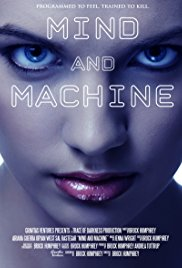

listado de peliculas
Back to the future
Género : Aventura
Puntaje : 86
Duración:116
The presidencies of Kennedy and Johnson, Vietnam, Watergate, and other history unfold through the perspective of an Alabama man with an IQ of 75
The Secret Life of Pets
Género : Animacion
Puntaje : 87
Duración:89
The presidencies of Kennedy and Johnson, Vietnam, Watergate, and other history unfold through the perspective of an Alabama man with an IQ of 75
Assassins Creed
Género : Accion
Puntaje : 92
Duración:120
The presidencies of Kennedy and Johnson, Vietnam, Watergate, and other history unfold through the perspective of an Alabama man with an IQ of 75
maria cuire
Género : Biografica
Puntaje : 88
Duración:100
The presidencies of Kennedy and Johnson, Vietnam, Watergate, and other history unfold through the perspective of an Alabama man with an IQ of 75

Mind and Machine
Género : Ciencia ficcion
Puntaje : 75
Duración:130
The presidencies of Kennedy and Johnson, Vietnam, Watergate, and other history unfold through the perspective of an Alabama man with an IQ of 75
The Land of Stealth
Género : Romance
Puntaje : 68
Duración:116
The presidencies of Kennedy and Johnson, Vietnam, Watergate, and other history unfold through the perspective of an Alabama man with an IQ of 75